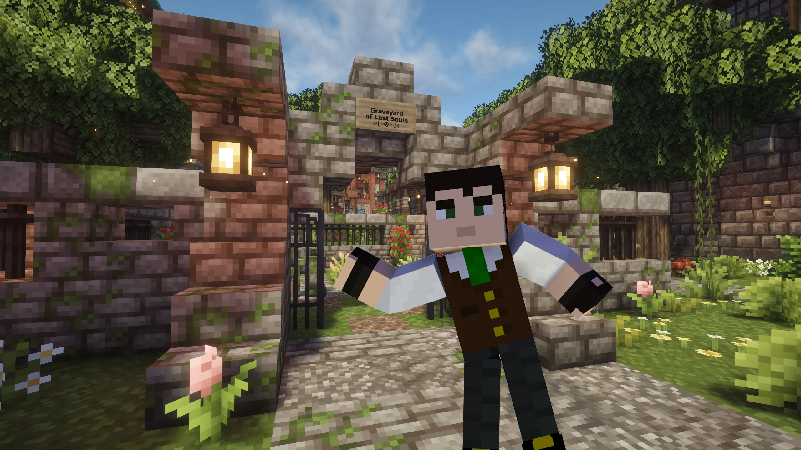

Blood on the Blocktower
A social deduction game in Minecraft.

Hello there! My name is Hamish, aka Symbus. Thank you for visiting my humble site.
I run a dedicated modded Minecraft server where I host a custom-made Blood on the Clocktower experience entirely within the game. I have recreated the game’s tense social deduction, nominations, and executions using in-game command systems and functions. Combined with an immersive build and proximity chat, these elements create a unique and thrilling experience.
With fully functional voting mechanics and easy-to-use storytelling tools, I have designed the game to feel smooth, dramatic, and faithful to the original experience, while also taking advantage of what Minecraft can uniquely offer.
To keep the game flowing nicely, I have limited the number of seats to 8 players. This helps keep the nights shorter while still leaving room for most official characters to be included and enjoyed.

Interested in joining the game? Use the Discord link at the bottom of this page to become part of the community, stay updated on upcoming sessions, and get access to the modpack and server information.
Most sessions are hosted at Sunday 1:00 PM Sydney Time , though additional games may occasionally be scheduled at other times.
We’re a fairly small, close-knit community focused on immersive social deduction experiences, and we’re always happy to welcome new players regardless of experience level.
Please note that the server uses a moderately large modpack, so a reasonably powerful PC is recommended for the best experience and stable performance.